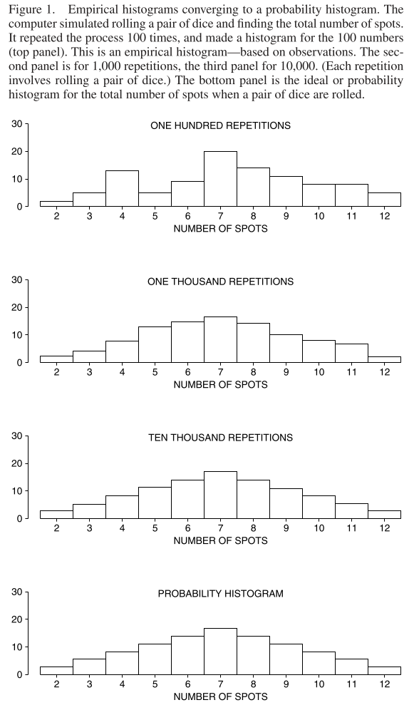
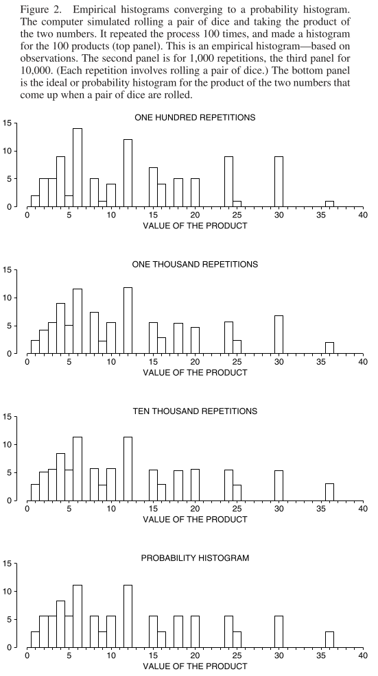
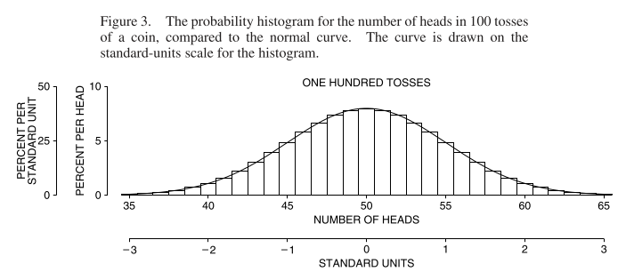
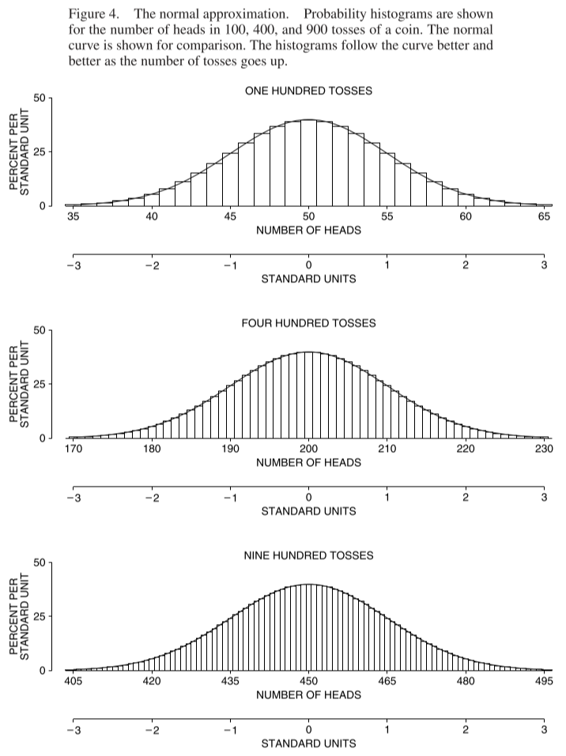
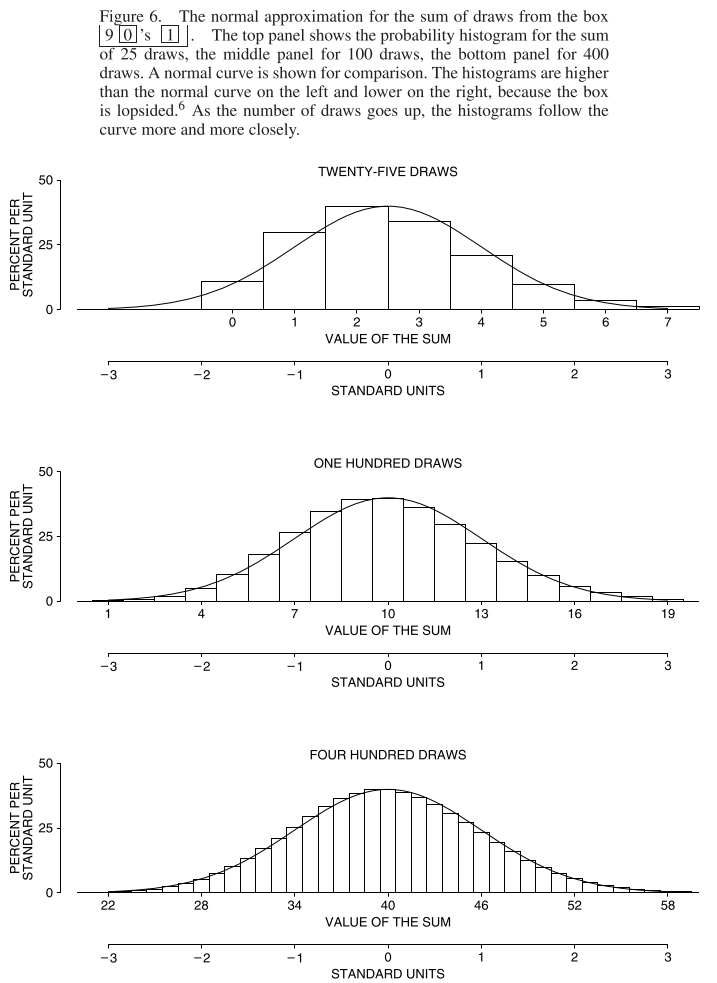
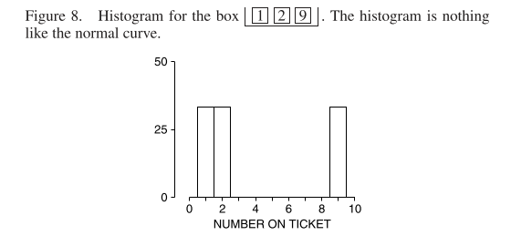
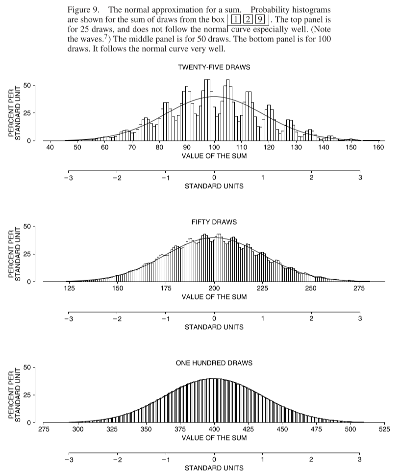
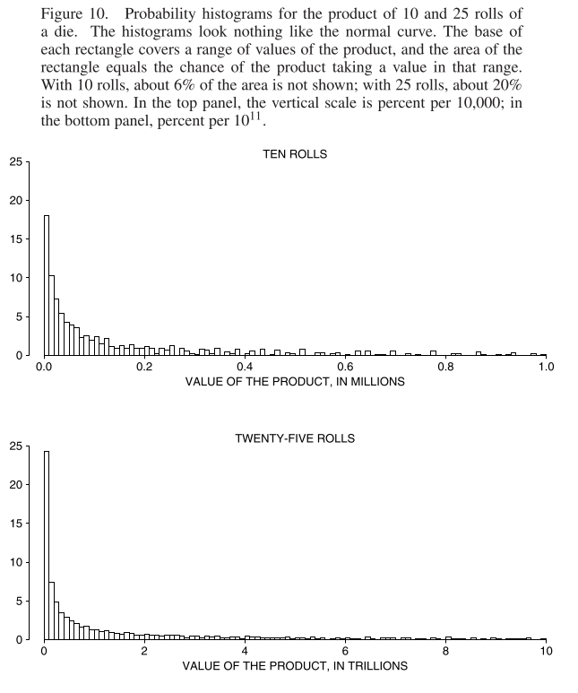

Chapter 18 The Normal Approximation for Probability Histograms
18.1 Chapter Notes
According to the law of averages, when a coin is tossed a large number of times, the percentage of heads will be close to 50%. Around 1700, the Swiss mathematician James Bernoulli put this on a rigorous mathematical footing. Twenty years later, Abraham de Moivre made a substantial improvement on Bernoulli’s work . . . Bernoulli and de Moivre both made the same assumptions about the coin: the tosses are independent, and on each toss the coin is as likely to land heads as tails. From these assumptions, it follows that the coin is as likely to land in any specific pattern of heads and tails as in any other. What Bernoulli did was to show that for most patterns, about 50% of the entries are heads.
Of course, de Moivre did not have anything like a modern calculator available. He needed a mathematical way of estimating the binomial coefficients, without having to work the arithmetic out. And he found a way to do it (though the approximation is usually credited to another mathematician, James Stirling). De Moivre’s procedure led him to the normal curve . . . In fact, he was able to prove that the whole probability histogram for the number of heads is close to the normal curve when the number of tosses is large.
The chapter introduces the probability histogram:

I think the y-axis must be wrong for those middle histograms. The area of the each rectangle in the probability histogram represents the probability of getting the associated value.
Here’s the empirical histograms converging to the probability histogram when you roll two dice and take the product instead of the sum:

The chapter relates the probability histogram for the number of heads in some large number of coin tosses to the normal curve:

The standard error for 100 tosses is \(\sqrt{100} \times 1/2 = 5\), which you can see by comparing the two different axes in the chart above.
Here’s the probability histogram converging to the normal curve:

In the early eighteenth century, de Moivre proved this convergence had to take place, by pure mathematical reasoning . . . The normal approximation consists in replacing the actual probability histogram by the normal curve before computing areas. This is legitimate when the probability histogram follows the normal curve. Probability histograms are often hard to work out, while areas under the normal curve are easy to look up in the table.
In what other situations can we apply the normal approximation? What about drawing from a box?
Again, the normal approximation works perfectly well, so long as you remember one thing. The more the histogram of the numbers in the box differs from the normal curve, the more draws are needed before the approximation takes hold.
Here, for example is the case where a box contains nine 0s and one 1:

What about with figures other than one or zero in the box? Here’s we have draws from a box containing one, two and nine. We start with the histogram, which does not look normal at all:

Now we draw the histogram for sums of a set number of draws from this box:

Where does the normal approximation not apply? What if we roll a die a certain number of times and take the product instead of the sum? We can see that the normal approximation will not help us here:

With enough draws, the probability histogram for the sum will be close to the normal curve. Mathematicians have a name for this fact. They call it “the central limit theorem,” because it plays a central role in statistical theory.
The Central Limit Theorem. When drawing at random with replacement from a box, the probability histogram for the sum will follow the normal curve, even if the contents of the box do not. The histogram must be put into standard units, and the number of draws must be reasonably large.
The central limit theorem applies to sums but not to other operations like products. The theorem is the basis for many of the statistical procedures discussed in the rest of the book.